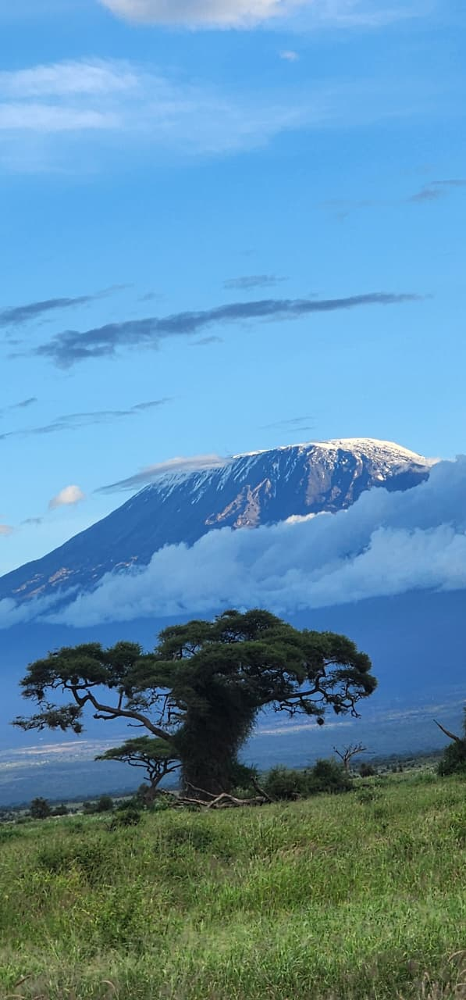

4 Days / 3 Nights
Morning pick-up from your hotel and departure to Amboseli National Park. Enjoy an afternoon game drive with spectacular views of Mount Kilimanjaro and its famous elephant herds. Dinner and overnight.
Full-day exploration of Amboseli, discovering its diverse wildlife, beautiful landscapes and rich birdlife, with opportunities to encounter large elephant herds against the backdrop of Kilimanjaro. Dinner and overnight.
Morning departure towards Tsavo East National Park. Enjoy an afternoon game drive through the park, renowned for its vast landscapes, iconic red elephants and diverse wildlife. Dinner and overnight.
Early morning game drive before breakfast, followed by a final safari experience. Depart Tsavo East and return to your hotel or chosen drop-off point.
Mount Kilimanjaro, Amboseli’s iconic elephants, Tsavo’s famous red
L.B: $1820
M.R: $2250